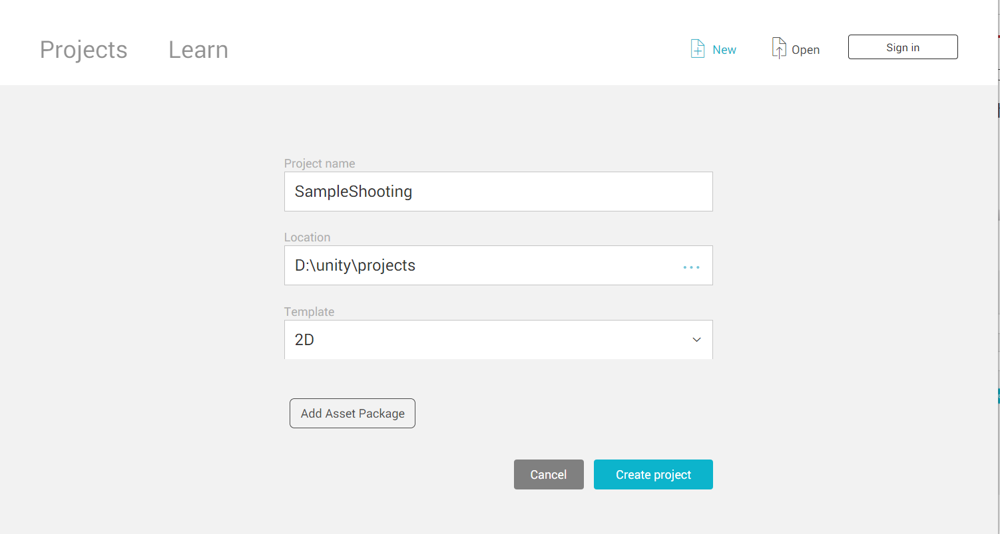

Unity シューティングゲーム
今回、Unityを使って2Dシューティングゲームを作って行きます。以下の手順で制作していきます！
最初に、ゲームを作るためにプロジェクトを作成していきます。Unityを起動し右上の｢New｣をクリックします。以下の画面が出てくるので、Project nameを｢SampleShootimg｣、Templateを｢2D｣にします。

右下のCreate Projectを選択し、しばらく待つとプロジェクトが作成されます。
続いて画面の設定を行います。今回は縦長の画面で作成するため、Gameタブを選択します。Free Aspectから一番下の＋ボタンを押し、Typeを｢Aspect Ration｣、Wigth&Heightに｢9:16｣と入力します
こちらのサイトに飛び、今回使用する素材をダウンロードします。ダウンロードできたら、解凍したフォルダをプロジェクトビューにドラッグ＆ドロップします。
これでゲーム制作の準備が完了しました！次からゲームを作っていきます。
次:ロケットの作成